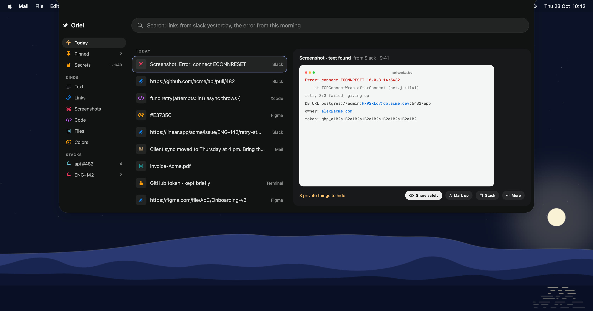
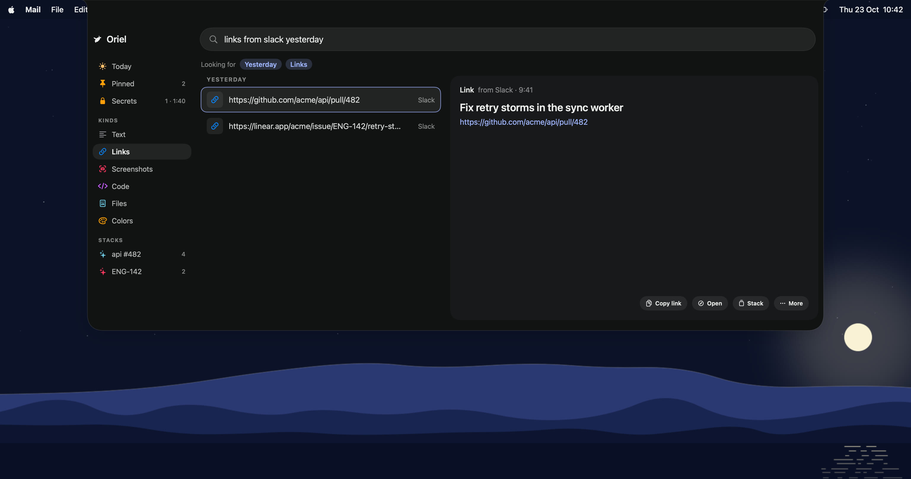
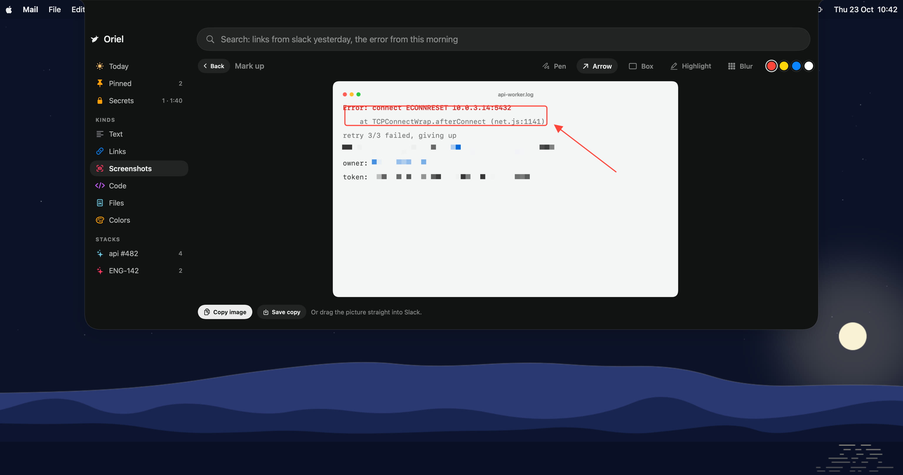
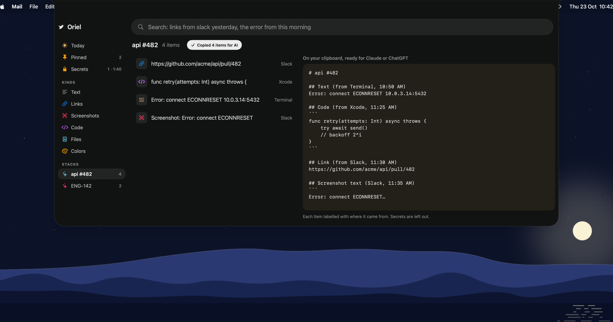
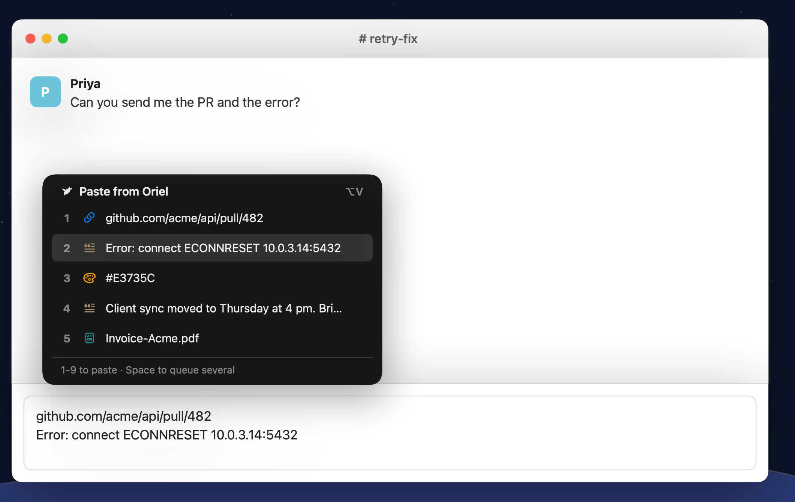
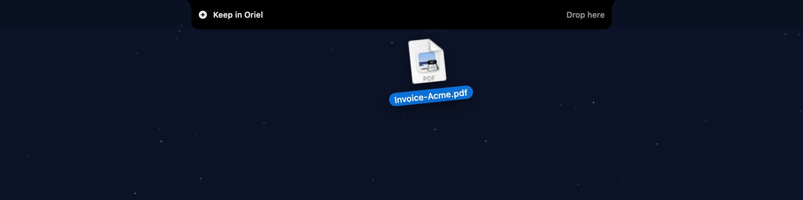
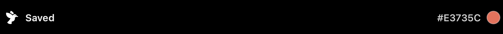
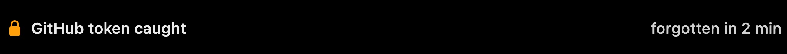

Every task leaves a trail.Oriel keeps it.
What you copy, screenshot and download, gathered by task and ready when you come back.
Copy as you work. Hand off the whole task.
The things you copy for one task land in one stack. One click hands the stack to Claude Code, with secrets masked, and nothing changes until you say so.
Everything else, one hover away.




Try it here: copy anything on this page, then press ⌥V.



Copy this fake token and watch the notch:
Everything stays on your Mac.
Free. Open source.
MIT licensed. Read the code, build it yourself, or download the app.
Or install from the terminal: curl -fsSL /install | sh
macOS 14 Sonoma or later. Not notarized yet, so the first time, click Open Anyway in System Settings > Privacy & Security.
Fair questions.
Which Macs does it work on?
Any Mac on macOS 14 Sonoma or later, Apple silicon or Intel. On a MacBook with a notch it opens when you hover the notch. Macs and displays without one get a small drawn notch at the top of the screen. Control-Option-Space opens it anywhere.
What can it see?
What you copy, what you drop on the notch, and new files in your Downloads and screenshots folders. Nothing else. It doesn't look at other apps, windows or tabs, and never asks to record your screen. Quick paste asks for Accessibility only so it can press Command-V for you.
Does anything leave my Mac?
Only a task you hand off, and it goes through your own Claude Code with secrets masked first. Everything else, search, reading text in screenshots, finding dates and hiding secrets, runs on your Mac. There's no account and no Oriel server.
Do I need Claude Code?
Only to hand off a task. It uses your own plan, so Oriel adds no cost. Everything else works without it.
What about passwords I copy?
Copies from password managers like 1Password and Bitwarden are skipped. Anything that looks like a key, token or card number is kept masked, kept out of search, and deleted after two minutes.
Is it free?
Yes. Oriel is open source under the MIT licence. No account, no licence key, no trial.
How do I install it?
Download the disk image, drag Oriel into Applications, then open it once and click Open Anyway in System Settings > Privacy & Security, because it isn't notarized yet. Or run the one-line install above. It appears in your menu bar and opens when you hover the notch or press Control-Option-Space.
Can I build it myself?
Yes. Clone the repo and run ./scripts/bundle.sh. It needs the Swift 6 toolchain and nothing else.
Where do I report a bug?
Open an issue on GitHub. Pull requests are welcome too.